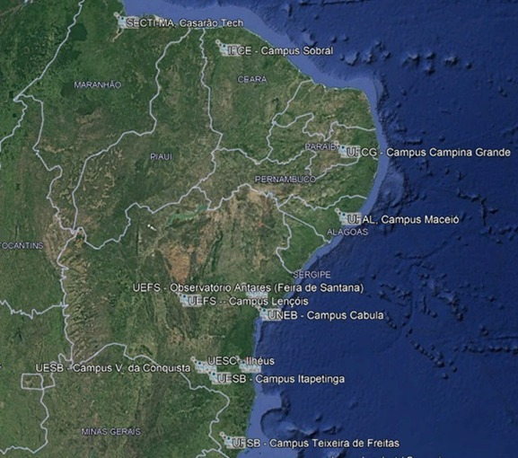

Centro de Disseminação
da Ciência da UESC

- Universidade Estadual de Santa Cruz (UESC) - Installed
- Universidade Estadual da Bahia (UNEB) - Installed
- Universidade Estadual do Sudoeste da Bahia (UESB) - Installed(2)
- Universidade Estadual de Feira de Santana (UEFS) - Installed
- Universidade Federal do Sul da Bahia (UFSB) - Installed
- Universidade Federal de Alagoas (UFAL)
- Universidade Federal de Campina Grande (UFCG)
- Instituto Federal do Ceará (IFCE) - Installed
- SECTI-MA